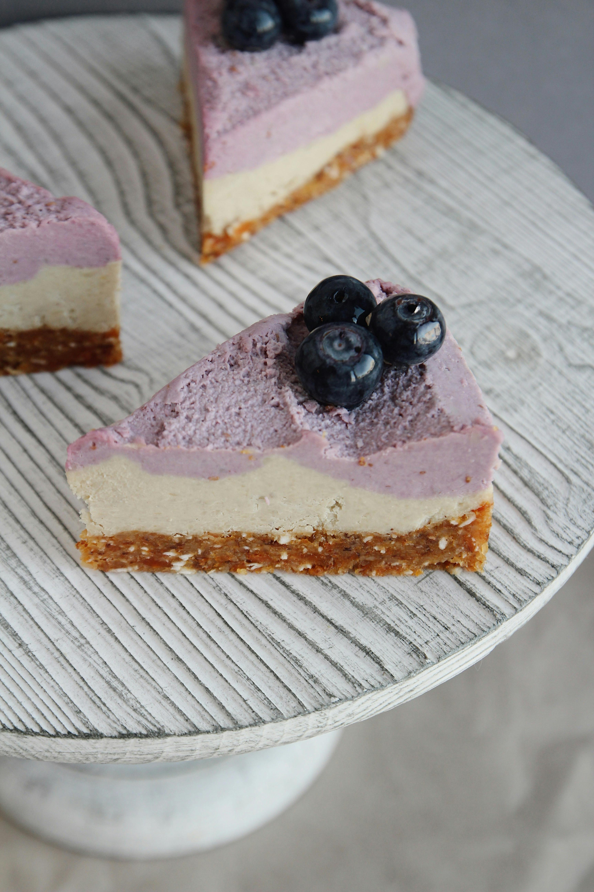

This cheesecake is creamier than most cheesecakes, and very easy to make. Use grated lemon zest or 1 teaspoon lemon extract for flavoring.
Preheat oven to 350 degrees F (175 degrees C).
Beat softened cream cheese slightly. Add eggs, sugar, vanilla, and lemon zest. Beat until light and fluffy. Pour mixture into crust.
Bake at 350 degrees F (175 degrees C) until firm, about 25 minutes. Let cheesecake cool then top with cherry or blueberry pie filling, if desired. Refrigerate for at least 8 hours before serving.